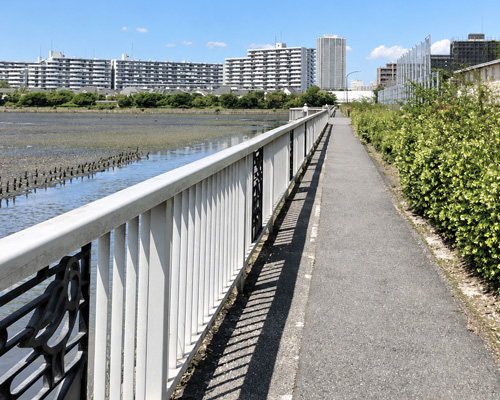
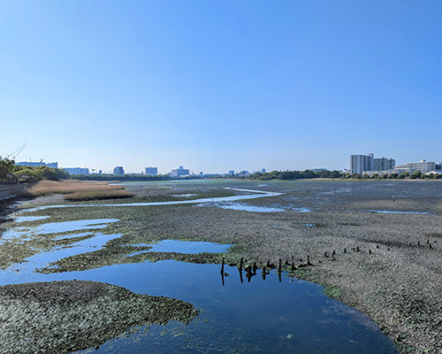
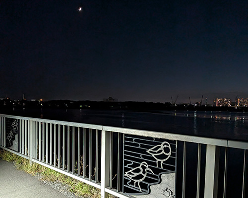
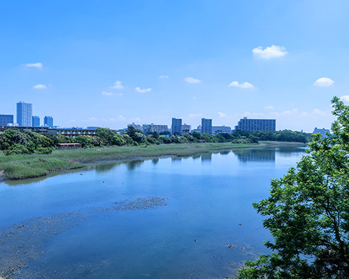
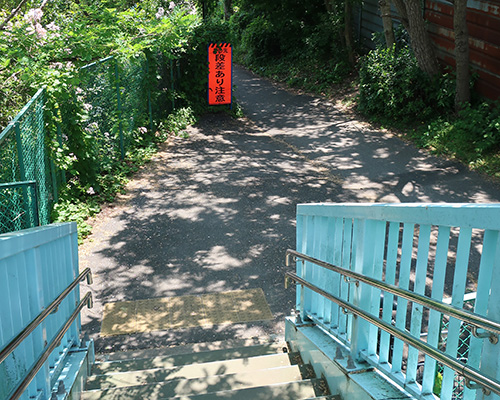

谷津干潟は1周約3.5kmの遊歩道が整備されており、歩く場所や時間帯によって見える景色や出会える生きものが大きく変わります。
ここでは、初めて訪れる方にもおすすめの観察ポイントをご紹介します。
おすすめ観察ポイント
1. 東側の道路沿い



干潟を広く見渡せる観察ポイントです。潮の満ち引きや鳥のいる場所によっては、野鳥を近くで観察できることもあります。
道幅が狭いため、立ち止まる際や三脚を使う際は、通行する人の妨げにならないようにしましょう。
2. 西側の高台からの眺め


階段を上がった先から、干潟と周囲の街並みを見渡せます。水辺とは違った高さから、干潟の広がりを楽しめる場所です。
観察ポイントは今後も随時追加していきます。